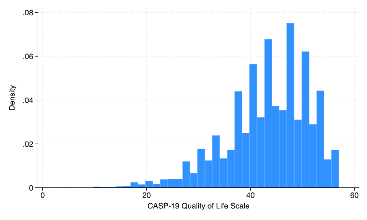
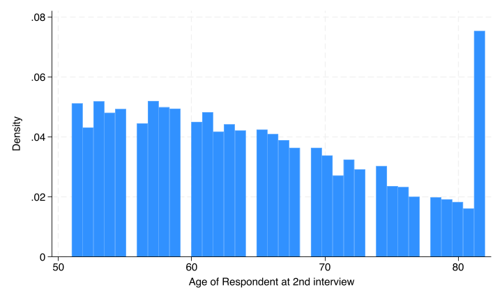
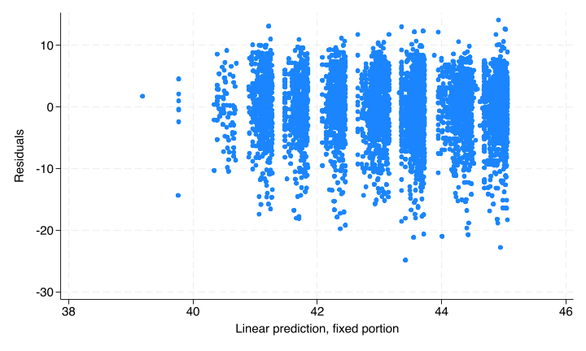
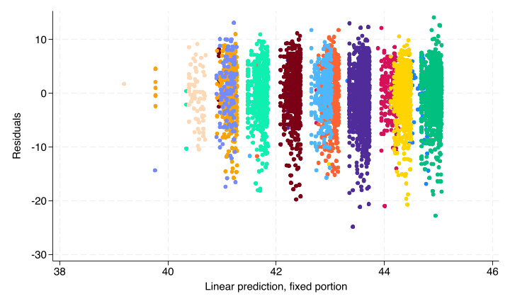
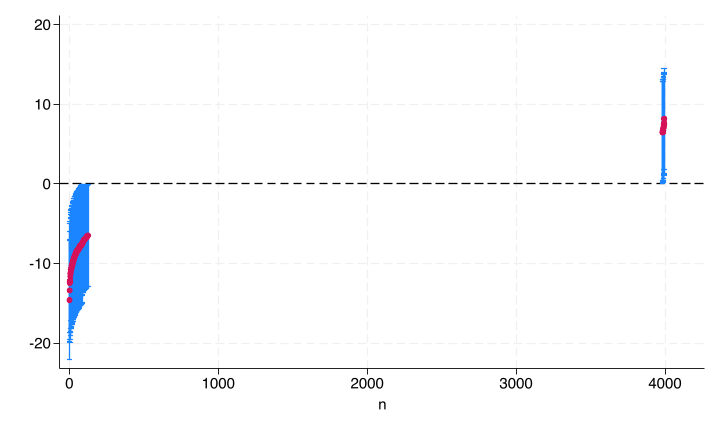

2 Fitting Linear Mixed Models
The data we’ll be using is The Irish Longitudinal Study on Ageing, specifically the 2012-2013 data. It is available via ICPSR, https://www.icpsr.umich.edu/icpsrweb/ICPSR/studies/37105/datadocumentation (you may need to sign in to access the data). The data represents surveys of the elderly (50+) in Ireland.
(The reason we’re using such an esoteric data set is that a lot of good publicly available longitudinal data comes in separate files per wave. This is very common, and if you need to use these, you’ll want to get familiar with the append and merge commands. This dataset requires no merging and is easier for demonstration purposes.)
Once you’ve downloaded and extracted the files, and set your proper working directory, you can load the data and run the provided cleaning script which identifies missing values for Stata.
. use ICPSR_37105/DS0001/37105-0001-Data
(The Irish Longitudinal Study on Ageing (TILDA), 2012-2013)
. quietly do ICPSR_37105/DS0001/37105-0001-Supplemental_syntax
. rename _all, lowerEach row of this data is from a single individual, but multiple individuals from the same household may be included. The primary variable of interest we’ll be focusing on is a Quality of Life scale, mhcasp19_total, which is a score built from several sub-surveys. Let’s see if we can predict it based upon age, social class, and gender. First let’s explore each variable.
. rename mhcasp19_total qol
. histogram qol
(bin=37, start=4, width=1.4324324)
Looks fine.
. histogram age
(bin=38, start=51, width=.81578947)
There’s actually a bit of censoring in the data, anyone below 52 or above 82. One way around this is to add dummy variables flagging those individuals, so let’s do that.
. label list AGE
AGE:
51 Less than 52
82 82+
. generate agebelow52 = age == 51
. replace agebelow52 = . if missing(age)
(0 real changes made)
. generate ageabove82 = age == 81
. replace ageabove82 = . if missing(age)
(0 real changes made)Next social class and gender:
. rename w2socialclass socialclass
. tab socialclass
w2socialclass | Freq. Percent Cum.
-----------------------------+-----------------------------------
Professional | 338 5.06 5.06
Managerial & Technical | 1,753 26.23 31.29
Non-Manual | 2,023 30.27 61.56
Skilled | 1,159 17.34 78.90
Semi-skilled | 1,115 16.68 95.59
Unskilled | 295 4.41 100.00
-----------------------------+-----------------------------------
Total | 6,683 100.00
. tab gd002
gd002 - |
Gender of |
respondent | Freq. Percent Cum.
------------+-----------------------------------
Male | 3,203 44.44 44.44
Female | 4,004 55.56 100.00
------------+-----------------------------------
Total | 7,207 100.00
. generate female = gd002 == 2
. replace female = . if missing(gd002)
(0 real changes made)Both look fine.
Finally, the household variable identifies individuals belonging to the same household.
. display _N
7207
. quietly levelsof household
. display r(r)
5376So we have 7,207 total individuals across 5,376 households.
2.1 Fitting the model
First, let’s fit a linear regression model ignoring the dependence within households.
. regress qol age agebelow52 ageabove82 i.socialclass female
Source | SS df MS Number of obs = 5,179
-------------+---------------------------------- F(9, 5169) = 16.52
Model | 9173.37321 9 1019.26369 Prob > F = 0.0000
Residual | 318919.729 5,169 61.6985354 R-squared = 0.0280
-------------+---------------------------------- Adj R-squared = 0.0263
Total | 328093.103 5,178 63.3629012 Root MSE = 7.8548
------------------------------------------------------------------------------
qol | Coefficient Std. err. t P>|t| [95% conf. interval]
-------------+----------------------------------------------------------------
age | -.010319 .0135138 -0.76 0.445 -.0368117 .0161737
agebelow52 | -.5032791 .559864 -0.90 0.369 -1.600849 .5942913
ageabove82 | -1.479405 1.006563 -1.47 0.142 -3.452694 .4938839
|
socialclass |
Manageria.. | .2622181 .5266783 0.50 0.619 -.7702942 1.29473
Non-Manual | -1.227245 .525863 -2.33 0.020 -2.258159 -.1963312
Skilled | -2.1252 .5508147 -3.86 0.000 -3.20503 -1.04537
Semi-skil~d | -3.091173 .5596054 -5.52 0.000 -4.188236 -1.994109
Unskilled | -4.056536 .7457017 -5.44 0.000 -5.518427 -2.594645
|
female | .4453072 .2310058 1.93 0.054 -.007562 .8981763
_cons | 45.07279 1.002216 44.97 0.000 43.10802 47.03756
------------------------------------------------------------------------------This model doesn’t do so hot, but it’s sufficient for our purposes - the F-test rejects.
The interpretation of the age variables is that the coefficient on age represents the relationship between age and QoL for individuals between ages 52 and 81. The two coefficients on agebelow52 and ageabove82 are allowing those individuals with censored ages to have a unique intercept, which means they don’t affect the slope on age. If you really wanted to drill down into what this all means, you could do some fancy margins calls to predict the average response using at() to force the two dummies to the appropriate levels (not run):
margins, at(age = 51 agebelow52 = 1 ageabove82 = 0) ///
at(age = (52 81) agebelow52 = 0 ageabove82 = 0) ///
at(age=81 agebelow52 = 0 ageabove82 = 1)
marginsplotIn this case, there doesn’t seem to be much effect of age (though it is good we controlled for it!).
We see a marginal effect for female, and we see some differences amongst social classes. Let’s explore them more with margins:
. margins socialclass
Predictive margins Number of obs = 5,179
Model VCE: OLS
Expression: Linear prediction, predict()
------------------------------------------------------------------------------
| Delta-method
| Margin std. err. t P>|t| [95% conf. interval]
-------------+----------------------------------------------------------------
socialclass |
Professio~l | 44.61599 .4839074 92.20 0.000 43.66733 45.56465
Manageria.. | 44.87821 .2053926 218.50 0.000 44.47555 45.28086
Non-Manual | 43.38874 .1976598 219.51 0.000 43.00125 43.77624
Skilled | 42.49079 .2765152 153.67 0.000 41.9487 43.03288
Semi-skil~d | 41.52482 .2788682 148.90 0.000 40.97812 42.07152
Unskilled | 40.55945 .5653632 71.74 0.000 39.4511 41.6678
------------------------------------------------------------------------------
. margins socialclass, pwcompare(pv)
Pairwise comparisons of predictive margins Number of obs = 5,179
Model VCE: OLS
Expression: Linear prediction, predict()
------------------------------------------------------------------------------
| Delta-method Unadjusted
| Contrast std. err. t P>|t|
--------------------------------------+---------------------------------------
socialclass |
Managerial & Technical |
vs |
Professional | .2622181 .5266783 0.50 0.619
Non-Manual vs Professional | -1.227245 .525863 -2.33 0.020
Skilled vs Professional | -2.1252 .5508147 -3.86 0.000
Semi-skilled vs Professional | -3.091173 .5596054 -5.52 0.000
Unskilled vs Professional | -4.056536 .7457017 -5.44 0.000
Non-Manual vs Managerial & Technical | -1.489463 .2842616 -5.24 0.000
Skilled vs Managerial & Technical | -2.387418 .3458945 -6.90 0.000
Semi-skilled |
vs |
Managerial & Technical | -3.353391 .3461459 -9.69 0.000
Unskilled vs Managerial & Technical | -4.318754 .6011768 -7.18 0.000
Skilled vs Non-Manual | -.8979548 .3446961 -2.61 0.009
Semi-skilled vs Non-Manual | -1.863928 .3411728 -5.46 0.000
Unskilled vs Non-Manual | -2.829291 .5978386 -4.73 0.000
Semi-skilled vs Skilled | -.9659729 .3939009 -2.45 0.014
Unskilled vs Skilled | -1.931336 .6317203 -3.06 0.002
Unskilled vs Semi-skilled | -.965363 .6305738 -1.53 0.126
------------------------------------------------------------------------------So Professional and Managerial are indistinguishable, and Semi-skilled and Unskilled are likewise indistinguishable.
To fit the mixed model, the command is mixed. Let’s first fit it again ignoring the household random effects.
. mixed qol age agebelow52 ageabove82 i.socialclass female
Mixed-effects ML regression Number of obs = 5,179
Wald chi2(9) = 148.97
Log likelihood = -18018.271 Prob > chi2 = 0.0000
------------------------------------------------------------------------------
qol | Coefficient Std. err. z P>|z| [95% conf. interval]
-------------+----------------------------------------------------------------
age | -.010319 .0135007 -0.76 0.445 -.0367799 .016142
agebelow52 | -.5032791 .5593233 -0.90 0.368 -1.599533 .5929744
ageabove82 | -1.479405 1.00559 -1.47 0.141 -3.450326 .4915162
|
socialclass |
Manageria.. | .2622181 .5261696 0.50 0.618 -.7690553 1.293492
Non-Manual | -1.227245 .525355 -2.34 0.019 -2.256922 -.1975681
Skilled | -2.1252 .5502827 -3.86 0.000 -3.203734 -1.046666
Semi-skil~d | -3.091173 .5590649 -5.53 0.000 -4.18692 -1.995426
Unskilled | -4.056536 .7449814 -5.45 0.000 -5.516673 -2.596399
|
female | .4453072 .2307827 1.93 0.054 -.0070187 .897633
_cons | 45.07279 1.001248 45.02 0.000 43.11038 47.0352
------------------------------------------------------------------------------
------------------------------------------------------------------------------
Random-effects parameters | Estimate Std. err. [95% conf. interval]
-----------------------------+------------------------------------------------
var(Residual) | 61.5794 1.210117 59.25271 63.99746
------------------------------------------------------------------------------We get identical results. If you look at the equations again, when there are no random effects, the model simplifies to ordinal least squares.
To add our random effect, we’ll use the following notation:
mixed y <fixed effects> || <group variable>:The || splits a formula into two sides, the left of it is the fixed effects, the right is the random effects. The : is for including random slopes which we’ll discuss below.
. mixed qol age agebelow52 ageabove82 i.socialclass female || household:
Performing EM optimization ...
Performing gradient-based optimization:
Iteration 0: Log likelihood = -17951.595
Iteration 1: Log likelihood = -17945.184
Iteration 2: Log likelihood = -17945.183
Computing standard errors ...
Mixed-effects ML regression Number of obs = 5,179
Group variable: household Number of groups = 3,995
Obs per group:
min = 1
avg = 1.3
max = 3
Wald chi2(9) = 129.84
Log likelihood = -17945.183 Prob > chi2 = 0.0000
------------------------------------------------------------------------------
qol | Coefficient Std. err. z P>|z| [95% conf. interval]
-------------+----------------------------------------------------------------
age | -.0102437 .0139236 -0.74 0.462 -.0375335 .0170461
agebelow52 | -.379831 .5276012 -0.72 0.472 -1.41391 .6542483
ageabove82 | -1.210758 .986185 -1.23 0.220 -3.143646 .7221287
|
socialclass |
Manageria.. | .2347399 .5116288 0.46 0.646 -.7680341 1.237514
Non-Manual | -1.09934 .5130227 -2.14 0.032 -2.104846 -.0938337
Skilled | -1.802139 .5375521 -3.35 0.001 -2.855722 -.7485564
Semi-skil~d | -2.97498 .5493453 -5.42 0.000 -4.051677 -1.898283
Unskilled | -3.555772 .7322568 -4.86 0.000 -4.990969 -2.120575
|
female | .5708249 .2086576 2.74 0.006 .1618636 .9797862
_cons | 44.78498 1.022019 43.82 0.000 42.78186 46.7881
------------------------------------------------------------------------------
------------------------------------------------------------------------------
Random-effects parameters | Estimate Std. err. [95% conf. interval]
-----------------------------+------------------------------------------------
household: Identity |
var(_cons) | 22.93389 1.79542 19.67161 26.73718
-----------------------------+------------------------------------------------
var(Residual) | 38.98733 1.613297 35.95015 42.2811
------------------------------------------------------------------------------
LR test vs. linear model: chibar2(01) = 146.18 Prob >= chibar2 = 0.0000Let’s walk through the output. Note that what we are calling the random effects (e.g. individuals in a repeated measures situation, classrooms in a students nested in classroom situation), Stata refers to as “groups” in the top of the output.
- You probably noticed how slow it is - at the very top, you’ll see that the solution is arrived at iteratively. Recall that any regression model aside from OLS requires an iterative solution.
- The log likelihood is how the iteration works; essentially the model “guesses” choices for the coefficients, and finds the set of coefficients that minimize the log likelihood. Of course, the “guess” is much smarter than random. The actual value of the log likelihood is meaningless.
- Since we are dealing with repeated measures of some sort, instead of a single sample size, we record the total number of obs, the number of groups (unique entries in the random effects) and min/mean/max of the groups. Just ensure there are no surprises in these numbers. In this model, the quality of life has a good chunk of missingness, so we’re losing about 2000 individuals.
- The \(\chi^2\) test tests the hypothesis that all coefficients are simultaneously 0.
- We have a significant p-value, so we continue with the interpretation.
- The coefficients table is interpreted just as in linear regression, with the addendum that each coefficient is also controlling for the structure introduced by the random effects.
- There is still nothing informative in age, however, compared to OLS, the two dummy variables have notably different coefficients.
- We’ll have to check whether there is any difference in our conclusion regarding social class.
- The coefficient on gender is larger and much more significant.
- The second table (“Random-effects parameters”) gives us information about the error structure. The
household:section is examining whether there is variation across households above and beyond the differences in the controlled variables. Since the estimate ofvar(_cons)(the estimated variance of the constant per person - the individual level random effect) is non-zero (and not close to zero), that is evidence that the random effect is necessary. If the estimate was 0 or close to 0, that would be evidence that the random effect is unnecessary and that any difference between individuals is already accounted for by the covariates. - The estimated variance of the residuals is any additional variation between observations. This is akin to the residuals from linear regression.
- The \(\chi^2\) test at the bottom is a formal test of the inclusion of the random effects versus a linear regression model without the random effects. We reject the null that the models are equivalent, so it is appropriate to include the random effects.
Let’s quickly examine the social class categories. The calls to margins are identical, but they operate slightly differently with the random effects. Recall that the margins command works by assuming every row data is a given social class, then uses the observed values of the other fixed effects and the regression equation to predict the outcome, and averaging to obtain the marginal means. This is not the case with the random effects; the random effects (\(\kappa_j\)) are assumed to be 0. So for any given household, the predicted response could be higher or lower, but on aggregate across all households, we are estimating the marginal means.
. margins socialclass
Predictive margins Number of obs = 5,179
Expression: Linear prediction, fixed portion, predict()
------------------------------------------------------------------------------
| Delta-method
| Margin std. err. z P>|z| [95% conf. interval]
-------------+----------------------------------------------------------------
socialclass |
Professio~l | 44.41056 .4747326 93.55 0.000 43.4801 45.34101
Manageria.. | 44.6453 .207459 215.20 0.000 44.23868 45.05191
Non-Manual | 43.31122 .198432 218.27 0.000 42.9223 43.70014
Skilled | 42.60842 .2721936 156.54 0.000 42.07493 43.14191
Semi-skil~d | 41.43558 .2762047 150.02 0.000 40.89422 41.97693
Unskilled | 40.85478 .555399 73.56 0.000 39.76622 41.94335
------------------------------------------------------------------------------
. margins socialclass, pwcompare(pv)
Pairwise comparisons of predictive margins Number of obs = 5,179
Expression: Linear prediction, fixed portion, predict()
------------------------------------------------------------------------------
| Delta-method Unadjusted
| Contrast std. err. z P>|z|
--------------------------------------+---------------------------------------
socialclass |
Managerial & Technical |
vs |
Professional | .2347399 .5116288 0.46 0.646
Non-Manual vs Professional | -1.09934 .5130227 -2.14 0.032
Skilled vs Professional | -1.802139 .5375521 -3.35 0.001
Semi-skilled vs Professional | -2.97498 .5493453 -5.42 0.000
Unskilled vs Professional | -3.555772 .7322568 -4.86 0.000
Non-Manual vs Managerial & Technical | -1.33408 .2766414 -4.82 0.000
Skilled vs Managerial & Technical | -2.036879 .3383401 -6.02 0.000
Semi-skilled |
vs |
Managerial & Technical | -3.20972 .3412208 -9.41 0.000
Unskilled vs Managerial & Technical | -3.790512 .591052 -6.41 0.000
Skilled vs Non-Manual | -.7027994 .33355 -2.11 0.035
Semi-skilled vs Non-Manual | -1.87564 .3334359 -5.63 0.000
Unskilled vs Non-Manual | -2.456432 .5864838 -4.19 0.000
Semi-skilled vs Skilled | -1.172841 .3799212 -3.09 0.002
Unskilled vs Skilled | -1.753633 .6150853 -2.85 0.004
Unskilled vs Semi-skilled | -.580792 .6134086 -0.95 0.344
------------------------------------------------------------------------------Here our conclusions don’t change - Unskilled & Semi-skilled have the same marginal means, and Professional and Managerial have the same marginal means, all other comparisons are significant.
2.2 Assumptions
The linear additivity remains necessary - we need to assume that the true relationship between the predictors and the outcome is linear (as opposed to something more complicated like exponential) and additive (as opposed to multiplicative, unless we are including interactions). With regress, we could use the rvf post-estimation command to generate a plot of residuals versus predicted values. The rvfplot command does not work after mixed, but we can generate it manually.
. predict fitted, xb
(524 missing values generated)
. predict residuals, res
(2,028 missing values generated)
. twoway scatter residuals fitted
The odd grouping pattern shown is due to the two categorical variables (gender and social class in the model). Each “blob” represents one permutation. You can see this by overlaying many plots:
. twoway (scatter residuals fitted if female == 1 & socialclass == 1) ///
> (scatter residuals fitted if female == 0 & socialclass == 1) ///
> (scatter residuals fitted if female == 1 & socialclass == 2) ///
> (scatter residuals fitted if female == 0 & socialclass == 2) ///
> (scatter residuals fitted if female == 1 & socialclass == 3) ///
> (scatter residuals fitted if female == 0 & socialclass == 3) ///
> (scatter residuals fitted if female == 1 & socialclass == 4) ///
> (scatter residuals fitted if female == 0 & socialclass == 4) ///
> (scatter residuals fitted if female == 1 & socialclass == 5) ///
> (scatter residuals fitted if female == 0 & socialclass == 5) ///
> (scatter residuals fitted if female == 1 & socialclass == 6) ///
> (scatter residuals fitted if female == 0 & socialclass == 6), ///
> legend(off)
Overall though we see no pattern in the residuals.
The other two assumptions which are relevant in linear regression, homogeneity of residuals and independence, are both violated by design in a mixed model. However, you need to assume that no other violations occur - if there is additional variance heterogeneity, such as that brought above by very skewed response variables, you may need to make adjustments. Similarly, if there is some other form of dependence you are not yet modeling, you need to adjust your model to account for it.
2.3 Predicting the random effects
While keeping in mind that we do not estimate the random intercepts when fitting this model, we can predict their BLUPS - best linear unbiased predictors. What’s the difference? It’s subtle, but basically we have far less confidence in predicted values than in estimated values. So any confidence intervals will be substantially larger. We know from the model output above that there is variance among the household random intercepts but don’t have a sense of the pattern - is there a single household that’s much different than all the rest? Are they all rather noisy? Or something in between. We can test this.
First, we’ll predict the random intercepts and the standard error of those intercepts.
. predict rintercept, reffects
(1,592 missing values generated)
. predict rintse, reses
(1,592 missing values generated)As noted above, the quality of life variable is missing for around 2000 individuals, so we’ll remove them from the data for ease (calling preserve first to recover the full data later).
. preserve
. drop if missing(qol)
(1,670 observations deleted)Now within each household, the random intercepts and standard errors are identical, so we can collapse down to the household level.
. collapse (first) rintercept rintse (count) age, by(household)Now we will sort by those random intercepts to make the output look nicer, generate a variable indicating row number for plotting on the x-axis, and compute upper and lower bounds of confidence intervals. Finally we generate a dummy variable to identify which households have confidence intervals not crossing zero.
. sort rintercept
. gen n = _n
. gen lb = rintercept - 1.96*rintse
(209 missing values generated)
. gen ub = rintercept + 1.96*rintse
(209 missing values generated)
. gen significant = (lb > 0 & ub > 0) | (lb < 0 & ub < 0)Now we can plot.
. twoway (rcap ub lb n if significant) ///
> (scatter rintercept n if significant), ///
> legend(off) yline(0)
The range in the middle is all households which we predict to have intercepts not distinguishable from zero. We can see that most of the random intercept’s confidence intervals cross with the exception of very few large values and a larger chunk of small values.
So there’s a negative skew to the distribution of random intercepts; most households had no additional error, but a decent chunk had significantly lower outcome than we would expect given their personel attributes. We can count exactly how many fall below:
. count if ub < 0 & lb < 0
1002.4 Nested and Crossed random effects
The model we’ve fit so far has a single random intercept, corresponding to household. However, we could have more than one.
2.4.1 Nested random effects
Nested random effects exist when we have a nested level structure. In this data, we actually have this as each household belongs to a single sampling cluster, identified by the cluster variable.
We can re-fit the model including a random intercept for cluster, then within each cluster, a random intercept for household. We do so by adding another equation via ||:
. restore
. mixed qol age agebelow52 ageabove82 i.socialclass female || cluster: || house
> hold:
Performing EM optimization ...
Performing gradient-based optimization:
Iteration 0: Log likelihood = -17961.965
Iteration 1: Log likelihood = -17945.568
Iteration 2: Log likelihood = -17945.22
Iteration 3: Log likelihood = -17945.184
Iteration 4: Log likelihood = -17945.183
Computing standard errors ...
Mixed-effects ML regression Number of obs = 5,179
Grouping information
-------------------------------------------------------------
| No. of Observations per group
Group variable | groups Minimum Average Maximum
----------------+--------------------------------------------
cluster | 619 1 8.4 28
household | 3,995 1 1.3 3
-------------------------------------------------------------
Wald chi2(9) = 129.84
Log likelihood = -17945.183 Prob > chi2 = 0.0000
------------------------------------------------------------------------------
qol | Coefficient Std. err. z P>|z| [95% conf. interval]
-------------+----------------------------------------------------------------
age | -.0102438 .0139236 -0.74 0.462 -.0375336 .017046
agebelow52 | -.3798295 .5275998 -0.72 0.472 -1.413906 .6542472
ageabove82 | -1.210748 .9861846 -1.23 0.220 -3.143634 .7221388
|
socialclass |
Manageria.. | .2347385 .5116282 0.46 0.646 -.7680344 1.237511
Non-Manual | -1.099335 .5130222 -2.14 0.032 -2.10484 -.0938296
Skilled | -1.802128 .5375516 -3.35 0.001 -2.85571 -.7485464
Semi-skil~d | -2.974975 .5493449 -5.42 0.000 -4.051671 -1.898278
Unskilled | -3.555756 .7322564 -4.86 0.000 -4.990952 -2.120559
|
female | .5708289 .2086569 2.74 0.006 .1618689 .9797889
_cons | 44.78498 1.02202 43.82 0.000 42.78186 46.7881
------------------------------------------------------------------------------
------------------------------------------------------------------------------
Random-effects parameters | Estimate Std. err. [95% conf. interval]
-----------------------------+------------------------------------------------
cluster: Identity |
var(_cons) | 5.41e-09 1.56e-06 1.2e-254 2.5e+237
-----------------------------+------------------------------------------------
household: Identity |
var(_cons) | 22.9346 1.795878 19.67155 26.73893
-----------------------------+------------------------------------------------
var(Residual) | 38.98675 1.613254 35.94965 42.28043
------------------------------------------------------------------------------
LR test vs. linear model: chi2(2) = 146.18 Prob > chi2 = 0.0000
Note: LR test is conservative and provided only for reference.Overall the output looks very similar to the model before, but now in the last table, the Random-effects Parameters, we have estimates of three variances, with the addition of cluster random effects.
In this case, the estimated variance is almost 0 (so close to 0 that Stata refuses to even compute a confidence interval), so we do not need this random effect - once we control for the fixed effects, there is no additional error common to each cluster. This shouldn’t be too surprising, as the clusters in this data are part of the survey design (which, again, we are ignoring) and somewhat meaningless.
If you compare the results of this model to the first model, you’ll see that the results are basically identical - as we expect when adding a predictor that does not improve model fit. It’s up to you whether you want to remove it. On the one hand, you can now appropriately claim you’re controlling for cluster-effects, but on the other hand, an additional random intercept makes the model converge much more slowly.
2.4.2 Crossed random effects
In the above design, we had nesting - within each cluster there are households, within each household there are individuals. However, this need not always be the case.
For example, imagine you lead a large research team where 100 research assistants are conducting repeated surveys of individuals. Here we have repeated measures per person, but we also potentially have interviewer effects that we want to include as random intercepts. However, there is no nesting structure here. Instead, we call this a crossed random effects structure.
Here’s the rub though: There is no such thing as “nested random effects”. Everything is crossed. So why do nested random effects exist? Consider the following small data set.
| classroom | studentid |
|---|---|
| a | 1 |
| a | 2 |
| b | 1 |
| b | 2 |
Here the first row of data represents the first student in classroom a, and the third row represents the first student in classroom b - both students are not the same student. If we attempted to tell Stata that these random effects are crossed, Stata will incorrectly think rows 1 and 3 are the same student. By telling Stata that studentid is nested inside classroom, it knows that student 1 from classroom a is distinct from student 1 from classroom b.
However, if we were more clever with our data, we might instead store our data as:
| classroom | studentid |
|---|---|
| a | 1 |
| a | 2 |
| b | 3 |
| b | 4 |
Now if we tell Stata these are crossed random effects, it won’t get confused! So all nested random effects are just a way to make up for the fact that you may have been foolish in storing your data.
Unfortunately fitting crossed random effects in Stata is a bit unwieldy. Here’s how we’d fit the model we’ve been working with with crossed random effects.
mixed qol age agebelow52 ageabove82 i.socialclass female || ///
_all:R.household || _all:R.clusterHowever, this model will run for a while and then fail - just because functionally crossed and nested effects are the same, does not mean the algorithm which the software uses functions the same. Stata simply fails more often with crossed random effects. On the other hand, the lmer command in R has an easier time of specifying crossed effects and can converge this model just fine.
2.5 Choosing Random or Fixed effects
When these models were first being developed, the recommended guidelines were:
- Fixed effects are used when the categories in the data represent all possible categories. For example, the collection of all schools in a given state.
- Random effects are used when the categories in the data represent a sample of all possible categories. For example, a sample of students in a school.
There are plenty of grey-areas in between so this advice isn’t always useful. Instead think of it from a practical point of view:
- Do you have a large enough sample size to include fixed effects (recall the rule of 10-20 observations per predictor. If each person in your data has no more than 2 observations, that’s far too many fixed effects)?
- Do you need to actually estimate the intercept within each group, as opposed to just controlling for group differences? (We can always predict random effects but that’s not as powerful as estimating.)
If the answer to both these are No, include as random effects.
(If you don’t need to estimate the group intercepts but the number of groups is low (say less than 5-10), it’s more common to just include it as a fixed effect anyways. But that’s just convention, not due to any strong argument which I’m aware of.)
2.6 Miscellaneous
There are various concerns we had with non-mixed models; most still hold. See the previous set of notes (linked to each topic) for more details.
Multicollinearity, the issue that predictor variables can be correlated amongst each other to provide false positive results, remains an issue in linear regression. The VIF cannot be estimated after a mixed model.
Overfitting is still possible. Sample size considerations are tricky, but the general rule of 10-20 observations per predictor is a good starting point. There’s the additional complexity of the group structure, but generally there are no restrictions on it. However, in practice, in you have a large number of groups with only a single measurement, convergence issues tend to arise.
Model selection is still a very bad idea to do.
Robust standard errors are still obtainable using vce(robust) option.
2.7 Convergence issues
With mixed models, the solution is arrived at iteratively, which means it can fail to converge for a number of reasons. Generally, failure to converge will be due to an issue with the data.
The first thing to try is scaling all your parameters:
egen scaled_var = std(var)Dummy variables typically don’t need to be scaled, but can be. If scaling all your variables allows convergence, try different combinations of scaled and unscaled to figure out what variables are causing the problem. It’s typically (but not always) the variables which have the largest scale to begin with.
Another potential convergence issue is extremely high correlation between predictors (including dummy variables). You should have already addressed this when considering multicollinearity, but if not, it can make convergence challenging.
If the iteration keeps running (as opposed to ending and complaining about lack of convergence), try passing the option iterate(#) with a few “large” (“large” is relative to running time) numbers to tell the algorithm to stop after # iterations, regardless of convergence. (Recall that an iterative solution produces an answer at each iteration, it’s just not a consistent answer until you reach convergence.) You’re looking for two things:
- First, if there are any estimated standard errors that are extremely close to zero or exploding towards infinity, that predictor may be causing the issue. Try removing it.
- Second, if you try a few different max iterations (say 50, 100 and 200), and the estimated coefficients and standard errors are relatively constant, you may be running into a case where the model is converging to just beyond the tolerance which Stata uses, but for all intents and purposes is converged. Set
iterate(#)to a high number and use that result.
You can try use the “reml” optimizer, by passing the reml option. This optimizer can be a bit easier to converge, though may be slower.
Finally, although it pains me to admit it, you should try running the model in different software such as R or SAS. Each software has slightly different algorithms it uses, and there are situations where one software will converge and another won’t